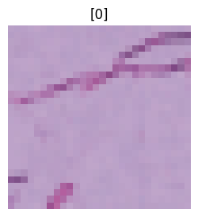
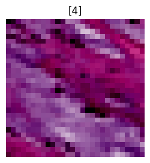

import torch
import torchvision
import matplotlib.pyplot as plt
from torch.utils.data import DataLoader
import torch.nn as nn
from torch import utils
from torch import optim
from torch import device
from torch import inference_mode
import tqdm
from timeit import default_timer as timer
from tqdm.auto import tqdm
from torchmetrics import ConfusionMatrix
import mlxtend
from mlxtend.plotting import plot_confusion_matrix
import numpy
from torchvision.transforms.v2 import (
ConvertImageDtype,
Normalize,
Resize,
CenterCrop,
ToTensor,
ToImage,
Compose
)
import medmnist
from medmnist import INFO, Evaluatornum_gpus = torch.cuda.device_count()
print(f"Number of GPUs available: {num_gpus}")
for i in range(num_gpus):
print(f"{i+1}. GPU {i}: {torch.cuda.get_device_name(i)}")
device = 0 # "Select the index of the GPU you wish to use"
torch.cuda.set_device(device)
print(f"GPU selection: {torch.cuda.get_device_name(device)}")
device1 = torch.device("cuda:0" if torch.cuda.is_available() else "cpu")
print(f"Using device: {device1}")Number of GPUs available: 1
1. GPU 0: NVIDIA GeForce MX110
GPU selection: NVIDIA GeForce MX110
Using device: cuda:0transformacion = Compose([
ToTensor(),
Normalize(mean=[0.5], std=[0.5])
])/home/pablo/.local/lib/python3.10/site-packages/torchvision/transforms/v2/_deprecated.py:42: UserWarning: The transform `ToTensor()` is deprecated and will be removed in a future release. Instead, please use `v2.Compose([v2.ToImage(), v2.ToDtype(torch.float32, scale=True)])`.Output is equivalent up to float precision.
warnings.warn(data_flag = "pathmnist"
info = INFO[data_flag]
DataClass = getattr(medmnist, info["python_class"])
# Load the training and testing datasets
train_data = DataClass(split="train", transform=transformacion, download=True)
val_data = DataClass(split="val", transform=transformacion, download=True)
test_data = DataClass(split="test", transform=transformacion, download=True)Downloading https://zenodo.org/records/10519652/files/pathmnist.npz?download=1 to /home/pablo/.medmnist/pathmnist.npz100%|██████████| 205615438/205615438 [00:20<00:00, 10059790.46it/s]Using downloaded and verified file: /home/pablo/.medmnist/pathmnist.npz
Using downloaded and verified file: /home/pablo/.medmnist/pathmnist.npz# check data properties
img = train_data[0][0]
label = train_data[0][1]
print(f"Image:\n {img}")
print(f"Label:\n {label}")
print(f"Image shape: {img.shape}")
print(f"Label: {label}")Image:
tensor([[[0.7255, 0.7176, 0.7255, ..., 0.7255, 0.7176, 0.7333],
[0.7098, 0.7255, 0.7176, ..., 0.5451, 0.5059, 0.4902],
[0.7255, 0.7255, 0.7176, ..., 0.6314, 0.6235, 0.6392],
...,
[0.7098, 0.7020, 0.7333, ..., 0.7333, 0.7255, 0.7333],
[0.6706, 0.7020, 0.7333, ..., 0.7333, 0.7333, 0.7333],
[0.6863, 0.7255, 0.7333, ..., 0.7255, 0.7333, 0.7412]],
[[0.6314, 0.6235, 0.6235, ..., 0.6314, 0.6235, 0.6314],
[0.6157, 0.6235, 0.6157, ..., 0.3882, 0.3490, 0.3176],
[0.6314, 0.6235, 0.6078, ..., 0.4980, 0.5059, 0.5216],
...,
[0.6078, 0.5765, 0.6314, ..., 0.6314, 0.6314, 0.6392],
[0.5059, 0.5686, 0.6314, ..., 0.6314, 0.6392, 0.6314],
[0.5294, 0.6235, 0.6314, ..., 0.6314, 0.6314, 0.6392]],
[[0.7804, 0.7804, 0.7804, ..., 0.7804, 0.7804, 0.7804],
[0.7725, 0.7725, 0.7725, ..., 0.5843, 0.5451, 0.5294],
[0.7725, 0.7725, 0.7647, ..., 0.6706, 0.6706, 0.6941],
...,
[0.7647, 0.7412, 0.7804, ..., 0.7804, 0.7804, 0.7804],
[0.7098, 0.7412, 0.7804, ..., 0.7804, 0.7804, 0.7804],
[0.7255, 0.7725, 0.7804, ..., 0.7804, 0.7804, 0.7882]]])
Label:
[0]
Image shape: torch.Size([3, 28, 28])
Label: [0]# Number of image channels
n_channels = info["n_channels"]
print(f"number of channels: {n_channels}")
# Number of classes
n_classes = len(info["label"])
print(f"number of classes: {n_classes}")
# Get the class names from the dataset
class_names = info["label"]
print(f"class names: {class_names}")number of channels: 3
number of classes: 9
class names: {'0': 'adipose', '1': 'background', '2': 'debris', '3': 'lymphocytes', '4': 'mucus', '5': 'smooth muscle', '6': 'normal colon mucosa', '7': 'cancer-associated stroma', '8': 'colorectal adenocarcinoma epithelium'}for i in range(3):
img = train_data[i][0]
label = train_data[i][1]
plt.figure(figsize=(3, 3))
plt.imshow(img.permute(1, 2, 0))
plt.title(label)
plt.axis(False)Clipping input data to the valid range for imshow with RGB data ([0..1] for floats or [0..255] for integers). Got range [-0.6313726..0.84313726].
Clipping input data to the valid range for imshow with RGB data ([0..1] for floats or [0..255] for integers). Got range [-0.372549..0.85882354].

# change data into dataloader form
BATCH_SIZE = 128
train_dataloader = DataLoader(dataset=train_data, batch_size=BATCH_SIZE, shuffle=True)
val_dataloader = DataLoader(dataset=val_data, batch_size=BATCH_SIZE, shuffle=False)
test_dataloader = DataLoader(dataset=test_data, batch_size=BATCH_SIZE, shuffle=False)# check dataloader
print(f"Dataloaders: {train_dataloader, test_dataloader}")
print(f"Length of train dataloader: {len(train_dataloader)} batches of {BATCH_SIZE}")
print(f"Length of test dataloader: {len(test_dataloader)} batches of {BATCH_SIZE}")
print(f"Length of val dataloader: {len(val_dataloader)} batches of {BATCH_SIZE}")Dataloaders: (<torch.utils.data.dataloader.DataLoader object at 0x7fd88dd53cd0>, <torch.utils.data.dataloader.DataLoader object at 0x7fd88dd53490>)
Length of train dataloader: 704 batches of 128
Length of test dataloader: 57 batches of 128
Length of val dataloader: 79 batches of 128# define training loop functions
def train_step(
model: torch.nn.Module,
data_loader: torch.utils.data.DataLoader,
loss_fn: torch.nn.Module,
optimizer: torch.optim.Optimizer,
accuracy_fn,
device: torch.device = device,
):
train_loss, train_acc = 0, 0
model.to(device)
for batch, (X, y) in enumerate(data_loader):
# need to change target shape for this medmnist data
y = y.squeeze().long()
# Send data to selected device
X, y = X.to(device), y.to(device)
# 1. Forward pass
y_pred = model(X)
# 2. loss and accuracy
loss = loss_fn(y_pred, y)
train_loss += loss
train_acc += accuracy_fn(y_true=y, y_pred=y_pred.argmax(dim=1))
# 3. Optimizer zero grad
optimizer.zero_grad()
# 4. Loss backward
loss.backward()
# 5. Optimizer step
optimizer.step()
# Calculate loss and accuracy per epoch
train_loss /= len(data_loader)
train_acc /= len(data_loader)
return train_loss, train_accdef test_step(
data_loader: torch.utils.data.DataLoader,
model: torch.nn.Module,
loss_fn: torch.nn.Module,
accuracy_fn,
device: torch.device = device,
):
test_loss, test_acc = 0, 0
model.to(device)
model.eval() # eval mode for testing
with torch.inference_mode(): # Inference context manager
for X, y in data_loader:
# need to change target shape for this medmnist data
y = y.squeeze().long()
# Send data to selected device
X, y = X.to(device), y.to(device)
# 1. Forward pass
test_pred = model(X)
# 2. Calculate loss and accuracy
test_loss += loss_fn(test_pred, y)
test_acc += accuracy_fn(y_true=y, y_pred=test_pred.argmax(dim=1))
# Adjust metrics and print out
test_loss /= len(data_loader)
test_acc /= len(data_loader)
return test_loss, test_accdef eval_func(
data_loader: torch.utils.data.DataLoader,
model: torch.nn.Module,
loss_fn: torch.nn.Module,
accuracy_fn,
device: torch.device = device,
):
eval_loss, eval_acc = 0, 0
model.to(device)
model.eval()
y_preds = []
y_targets = []
with torch.inference_mode():
for batch, (X, y) in tqdm(enumerate(data_loader)):
# need to change target shape for this medmnist data
y = y.squeeze().long()
# Send data to selected device
X, y = X.to(device), y.to(device)
# Forward pass
eval_pred = model(X)
# Find loss and accuracy
eval_loss += loss_fn(eval_pred, y)
eval_acc += accuracy_fn(y_true=y, y_pred=eval_pred.argmax(dim=1))
# Add prediction and target labels to list
eval_labels = torch.argmax(torch.softmax(eval_pred, dim=1), dim=1)
y_preds.append(eval_labels)
y_targets.append(y)
# Scale loss and acc
eval_loss /= len(data_loader)
eval_acc /= len(data_loader)
# Put predictions on CPU for evaluation
y_preds = torch.cat(y_preds).cpu()
y_targets = torch.cat(y_targets).cpu()
return {
"model_name": model.__class__.__name__,
"loss": eval_loss.item(),
"accuracy": eval_acc,
"predictions": y_preds,
"targets": y_targets,
}def print_train_time(start: float, end: float, device: torch.device = None):
total_time = end - start
print(f"Train time on {device}: {total_time:.3f} seconds")
return total_timedef accuracy_fn(y_true, y_pred):
correct = torch.eq(y_true, y_pred).sum().item()
acc = (correct / len(y_pred)) * 100
return accclass cnn(torch.nn.Module):
def __init__(self, input_shape: int, hidden_units: int, output_shape: int):
super().__init__()
self.layer1 = nn.Sequential(
nn.Conv2d(
in_channels=input_shape, out_channels=hidden_units, kernel_size=3
),
nn.BatchNorm2d(hidden_units),
nn.ReLU(),
)
self.layer2 = nn.Sequential(
nn.Conv2d(
in_channels=hidden_units, out_channels=hidden_units, kernel_size=3
),
nn.BatchNorm2d(hidden_units),
nn.ReLU(),
nn.MaxPool2d(kernel_size=2, stride=2),
)
self.layer3 = nn.Sequential(
nn.Conv2d(
in_channels=hidden_units, out_channels=hidden_units * 4, kernel_size=3
),
nn.BatchNorm2d(hidden_units * 4),
nn.ReLU(),
)
self.layer4 = nn.Sequential(
nn.Conv2d(
in_channels=hidden_units * 4,
out_channels=hidden_units * 4,
kernel_size=3,
),
nn.BatchNorm2d(hidden_units * 4),
nn.ReLU(),
)
self.layer5 = nn.Sequential(
nn.Conv2d(
in_channels=hidden_units * 4,
out_channels=hidden_units * 4,
kernel_size=3,
padding=1,
),
nn.BatchNorm2d(hidden_units * 4),
nn.ReLU(),
nn.MaxPool2d(kernel_size=2, stride=2),
)
self.fc = nn.Sequential(
nn.Linear(hidden_units * 4 * 4 * 4, hidden_units * 8),
nn.ReLU(),
nn.Linear(hidden_units * 8, hidden_units * 8),
nn.ReLU(),
nn.Linear(hidden_units * 8, n_classes),
)
def forward(self, x):
x = self.layer1(x)
x = self.layer2(x)
x = self.layer3(x)
x = self.layer4(x)
x = self.layer5(x)
x = x.view(x.size(0), -1)
x = self.fc(x)
return x
# Define Model
model = cnn(input_shape=n_channels, hidden_units=16, output_shape=n_classes).to(device)
# Setup loss and optimizer
loss_fn = nn.CrossEntropyLoss()
optimizer = torch.optim.SGD(model.parameters(), lr=0.001, momentum=0.9)
# View Model
modelcnn(
(layer1): Sequential(
(0): Conv2d(3, 16, kernel_size=(3, 3), stride=(1, 1))
(1): BatchNorm2d(16, eps=1e-05, momentum=0.1, affine=True, track_running_stats=True)
(2): ReLU()
)
(layer2): Sequential(
(0): Conv2d(16, 16, kernel_size=(3, 3), stride=(1, 1))
(1): BatchNorm2d(16, eps=1e-05, momentum=0.1, affine=True, track_running_stats=True)
(2): ReLU()
(3): MaxPool2d(kernel_size=2, stride=2, padding=0, dilation=1, ceil_mode=False)
)
(layer3): Sequential(
(0): Conv2d(16, 64, kernel_size=(3, 3), stride=(1, 1))
(1): BatchNorm2d(64, eps=1e-05, momentum=0.1, affine=True, track_running_stats=True)
(2): ReLU()
)
(layer4): Sequential(
(0): Conv2d(64, 64, kernel_size=(3, 3), stride=(1, 1))
(1): BatchNorm2d(64, eps=1e-05, momentum=0.1, affine=True, track_running_stats=True)
(2): ReLU()
)
(layer5): Sequential(
(0): Conv2d(64, 64, kernel_size=(3, 3), stride=(1, 1), padding=(1, 1))
(1): BatchNorm2d(64, eps=1e-05, momentum=0.1, affine=True, track_running_stats=True)
(2): ReLU()
(3): MaxPool2d(kernel_size=2, stride=2, padding=0, dilation=1, ceil_mode=False)
)
(fc): Sequential(
(0): Linear(in_features=1024, out_features=128, bias=True)
(1): ReLU()
(2): Linear(in_features=128, out_features=128, bias=True)
(3): ReLU()
(4): Linear(in_features=128, out_features=9, bias=True)
)
)torch.manual_seed(42)
# Measure Time
train_time_start_model = timer()
iteration_loss_list = []
iteration_accuracy_list = []
# set parameters
epochs = 10
best_loss = 10
# call train and test function
for epoch in tqdm(range(epochs)):
train_loss, train_acc = train_step(
data_loader=train_dataloader,
model=model,
loss_fn=loss_fn,
optimizer=optimizer,
accuracy_fn=accuracy_fn,
device=device1,
)
test_loss, test_acc = test_step(
data_loader=test_dataloader,
model=model,
loss_fn=loss_fn,
accuracy_fn=accuracy_fn,
device=device1,
)
for iteration, (x, y) in enumerate(train_dataloader):
iteration_loss_list.append(train_loss.item())
iteration_accuracy_list.append(train_acc)
print(
f"Epoch: {epoch} | Training loss: {train_loss:.3f} | Training acc: {train_acc:.2f} | Test loss: {test_loss:.3f} | Test acc: {test_acc:.2f}"
)
# save best model instance
if test_loss < best_loss:
best_loss = test_loss
print(f"Saving best model for epoch: {epoch}")
torch.save(obj=model.state_dict(), f="./model.pth")
train_time_end_model = timer()
total_train_time_model = print_train_time(
start=train_time_start_model, end=train_time_end_model, device=device1
)--------------------------------------------------------------------------- KeyboardInterrupt Traceback (most recent call last) Cell In[17], line 33 16 train_loss, train_acc = train_step( 17 data_loader=train_dataloader, 18 model=model, (...) 22 device=device1, 23 ) 25 test_loss, test_acc = test_step( 26 data_loader=test_dataloader, 27 model=model, (...) 30 device=device1, 31 ) ---> 33 for iteration, (x, y) in enumerate(train_dataloader): 34 iteration_loss_list.append(train_loss.item()) 35 iteration_accuracy_list.append(train_acc) File ~/.local/lib/python3.10/site-packages/torch/utils/data/dataloader.py:630, in _BaseDataLoaderIter.__next__(self) 627 if self._sampler_iter is None: 628 # TODO(https://github.com/pytorch/pytorch/issues/76750) 629 self._reset() # type: ignore[call-arg] --> 630 data = self._next_data() 631 self._num_yielded += 1 632 if self._dataset_kind == _DatasetKind.Iterable and \ 633 self._IterableDataset_len_called is not None and \ 634 self._num_yielded > self._IterableDataset_len_called: File ~/.local/lib/python3.10/site-packages/torch/utils/data/dataloader.py:673, in _SingleProcessDataLoaderIter._next_data(self) 671 def _next_data(self): 672 index = self._next_index() # may raise StopIteration --> 673 data = self._dataset_fetcher.fetch(index) # may raise StopIteration 674 if self._pin_memory: 675 data = _utils.pin_memory.pin_memory(data, self._pin_memory_device) File ~/.local/lib/python3.10/site-packages/torch/utils/data/_utils/fetch.py:52, in _MapDatasetFetcher.fetch(self, possibly_batched_index) 50 data = self.dataset.__getitems__(possibly_batched_index) 51 else: ---> 52 data = [self.dataset[idx] for idx in possibly_batched_index] 53 else: 54 data = self.dataset[possibly_batched_index] File ~/.local/lib/python3.10/site-packages/torch/utils/data/_utils/fetch.py:52, in <listcomp>(.0) 50 data = self.dataset.__getitems__(possibly_batched_index) 51 else: ---> 52 data = [self.dataset[idx] for idx in possibly_batched_index] 53 else: 54 data = self.dataset[possibly_batched_index] File ~/.local/lib/python3.10/site-packages/medmnist/dataset.py:138, in MedMNIST2D.__getitem__(self, index) 132 """ 133 return: (without transform/target_transofrm) 134 img: PIL.Image 135 target: np.array of `L` (L=1 for single-label) 136 """ 137 img, target = self.imgs[index], self.labels[index].astype(int) --> 138 img = Image.fromarray(img) 140 if self.as_rgb: 141 img = img.convert("RGB") File ~/.local/lib/python3.10/site-packages/PIL/Image.py:3304, in fromarray(obj, mode) 3301 msg = "'strides' requires either tobytes() or tostring()" 3302 raise ValueError(msg) -> 3304 return frombuffer(mode, size, obj, "raw", rawmode, 0, 1) File ~/.local/lib/python3.10/site-packages/PIL/Image.py:3206, in frombuffer(mode, size, data, decoder_name, *args) 3203 im.readonly = 1 3204 return im -> 3206 return frombytes(mode, size, data, decoder_name, args) File ~/.local/lib/python3.10/site-packages/PIL/Image.py:3138, in frombytes(mode, size, data, decoder_name, *args) 3135 _check_size(size) 3137 im = new(mode, size) -> 3138 if im.width != 0 and im.height != 0: 3139 decoder_args: Any = args 3140 if len(decoder_args) == 1 and isinstance(decoder_args[0], tuple): 3141 # may pass tuple instead of argument list File ~/.local/lib/python3.10/site-packages/PIL/Image.py:559, in Image.height(self) 555 @property 556 def width(self) -> int: 557 return self.size[0] --> 559 @property 560 def height(self) -> int: 561 return self.size[1] 563 @property 564 def size(self) -> tuple[int, int]: KeyboardInterrupt:
# Load model
loaded_model = cnn(input_shape=n_channels, hidden_units=16, output_shape=n_classes).to(
device
)
loaded_model.load_state_dict(torch.load(f="./model.pth"))
# get results
model_results = eval_func(
data_loader=val_dataloader,
model=loaded_model,
loss_fn=loss_fn,
accuracy_fn=accuracy_fn,
device=device,
)
model_results# Get Model predictions and true targets
y_targets = model_results["targets"]
y_preds = model_results["predictions"]
# Setup confusion matrix
confmat = ConfusionMatrix(task="multiclass", num_classes=len(class_names))
confmat_tensor = confmat(preds=y_preds, target=y_targets)
# Plot the confusion matrix
fix, ax = plot_confusion_matrix(
conf_mat=confmat_tensor.numpy(), class_names=class_names, figsize=(10, 7)
)# Get Model predictions and true targets
y_targets = model_results["targets"]
y_preds = model_results["predictions"]
# Setup confusion matrix
confmat = ConfusionMatrix(task="multiclass", num_classes=len(class_names))
confmat_tensor = confmat(preds=y_preds, target=y_targets)
# Plot the confusion matrix
fix, ax = plot_confusion_matrix(
conf_mat=confmat_tensor.numpy(), class_names=class_names, figsize=(10, 7)
)